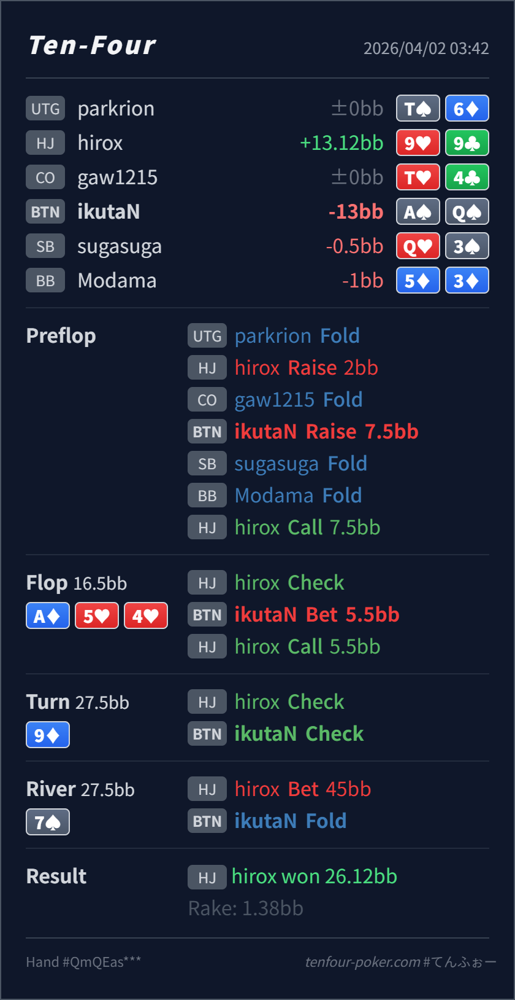

Preflop
良いAQo は BTN 3bet の主力で、位置もあるので素直に利益を取りやすいです。
主論点は、3bet pot の A-high board で AQ をどこまで押し切るかです。当時の思考メモはないので、「top pair top kicker で pot control したくなった」という仮定で見ます。結論は、preflop 3bet、flop c-bet、river fold は自然で、いちばん見直したいのは turn の check でした。
ikutaN BTN AsQsAd 5h 4h / 9d / 7stop pair top kicker で安全に回したくなった という仮定でレビューします。ikutaN BTN AsQs2BB, BTN 3bet 7.5BB, HJ callAd 5h 4h / 9d / 7s5.5BB, HJ call45BB into 27.5BB, BTN fold
良いAQo は BTN 3bet の主力で、位置もあるので素直に利益を取りやすいです。
Ad 5h 4h良い
Hero は top pair top kicker でまだしっかり value を取れる層です。
9dやや受け身AQ はまだ value / protection を取りたい hand で、check しすぎると river を受けやすいです。
7s良いAQ は bluff-catcher ですが、overbet 級 lead に対してはかなり苦しいです。
| 論点 | その場で置きがちな見立て | どこがズレたか | 次回の基準 |
|---|---|---|---|
turn の AQ | top pair top kicker なので、もう pot を大きくしすぎず安全に回したくなる | 3bet pot の A-high dynamic board では、まだ worse Ax や heart draw から value / protection を取れる余地があります。check すると BTN 側の range が capped に見え、river を受けやすくなります。 | 強い one pair では、まだ何にコールされるか と 何に無料で実現させたくないか を先に確認する |
| turn の大サイズ発想 | 強い hand だから overbet で一気に取り切りたくなる | AQ は fold されると困る worse hand にも勝っています。250%pot は 99 や強い Ax だけを残しやすく、極化しすぎです。 | size は 誰に残ってほしいか から決める。AQ は medium size で広く続行させたい hand |
| ストリート | その時点の見え方 | 判断の焦点 | 評価 | 推奨 |
|---|---|---|---|---|
| Preflop | HJ open に対する OOP call range は pocket、Ax、suited broadway が多めです。 | AQo は BTN 3bet の主力で、位置もあるので素直に利益を取りやすいです。 | 良い | 3bet 7.5BB は自然です。 |
Flop Ad 5h 4h | HJ の call には Ax、heart draw、set、65s、一部 pocket が残ります。 | Hero は top pair top kicker でまだしっかり value を取れる層です。 | 良い | 33% 前後の c-bet はかなり自然です。 |
Turn 9d | flop call 後も HJ には Ax と heart draw が厚く、99 はここで set 化します。 | AQ はまだ value / protection を取りたい hand で、check しすぎると river を受けやすいです。 | やや受け身 | default は medium size で打ち続ける方が自然です。check は混ざっても主軸にはしにくいです。 |
River 7s | turn check-back 後の BTN はやや capped に見え、HJ は set、76s、一部 two pair、missed draw bluff を持ちます。 | AQ は bluff-catcher ですが、overbet 級 lead に対してはかなり苦しいです。 | 良い | ここは fold が自然です。特に Ah を持たず、straight も block していません。 |
AQ のような強い one pair は、強いから check ではなく、まだ worse が続くか と draw に無料カードを渡したいか で判断すると整理しやすいです。QQ+ や極化 hand 向きで、AQ は広くコールされる medium size の方が噛み合いやすいです。AQ 本体は fold されて困る hand にも勝っています。AQ は medium size の方が AJ/AT や draw から取りやすく、安定して稼ぎやすいです。